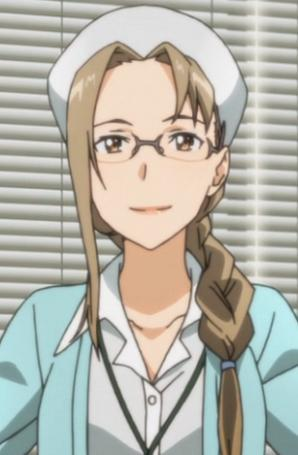
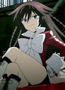
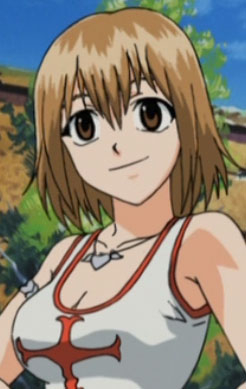
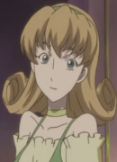
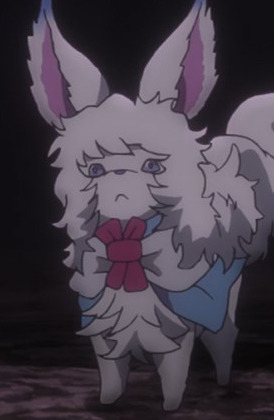
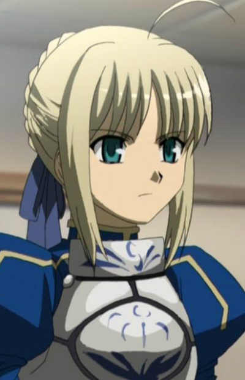
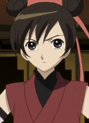

|  |
Aki Natsuki |
|
Aki Natsuki is the nurse who would watch over Kirito whenever he went into GGO. |
|  |
Alice |
- Pandora Hearts
- Pandora Hearts Specials
|
Alice is a chain was in Abyss before Oz was threw in. She is the strongest chain in the abyss. She has a big appetite. She is hothead and loud spoken. |
|  |
Elie |
- Rave Master
- Fairy Tail x Rave Master
|
Elie is one very lively, bubbly and optimistic girl. She can be high temper sometimes. She loves casino and will down everything to go to one. She has amnesia and tring to find her memmories. |
|  |
Emilia |
|
Emilia is an actress and a friend of Juliet. She seems to be the cheerful one of the group. |
|  |
Fou |
- Fate/Grand Order: First Order
- Fate/Grand Order: Moonlight/Lostroom
|
Fou and Cath Palug is a pet for Chaldea Security Organization. It is the companion of Mash and Ritsuka. |
 |
Fuyumi Mizuhara |
- Food Wars!
- Food Wars! The Second Plate
|
Fuyumi Mizuhara is a 79th Generation Tootsuki Academy Alumnus and a previous 2nd Seat of the Elite Ten Council. She a woman of a few words who gives off a lazy atomsphere. She rarely speaks as well. |
| |
Inertia |
- Kino's Journey: Byouki no Kuni -For You-
|
Inertia is an affilicted child Kino visits on one of her journey. |
 |
Queen Victoria |
|
Queen Victoria is the queen of England. She is a kind and considerate person and a prestigious leader. Ayako Kawasumi voiced the younger Queen. |
|  |
Saber |
- Fate/stay Night
- Fate/stay Night Movie: Unlimited Blade Works
- Fate/stay Night TV Reproduction
- Carnival Phantasm
- Fate/Zero
- Fate/Zero Season 2
- Carnival Phantasm EX Season
- Carnival Phantasm: Illya-jou
- Fate/Zero Remix
- Fate/kaleid liner Primsa Illya
- Carnival Phantasm: HibiChika Special
- Fate/stay Night: Unlimited Blade Works
- Fate/stay Night: Unlimited Blade Works 2nd Season
- Fate/stay Night Movie: Heavan's Feel - I. Presage Flower
- Fate/Apocrypha
|
Saber is a Saber - class servant. Saber is a strong - willed young women who speaks resolutely. She is courageous and determined. She doesn't like to be treated as a woman or a human. She is know as Artoria Pendragon or King Arthur. She constantly insists that she is a knight and king above all, and that her gender is of little importance to her and her role. |
|  |
Suzuran |
- Tsubasa Chronicle 2nd Series
|
Suzuran is the owner of the circus in the Shara country. She is in love with Souseki. |